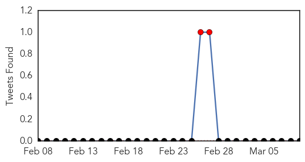

Unknown
30-Day Web Trend
1 alerts, 0 warnings

30-Day Twitter Trend
0 alerts, 0 warnings

Article Locations


Article Confidences

Top Articles:
- 0.926
- Sudan Tribune: Plural news and views on Sudan
- 0.923
- Can a facility's administration force nurses to take the flu vaccine? What are my rights?
- 0.922
- Outreach efforts continue at UCLA for possible 'superbug' patients
- 0.919
- More Than 160 Exposed to Deadly 'Superbug' at Hospital
- 0.917
- Chicago Tribune
- 0.917
- Chicago Tribune
- 0.917
- Chicago Tribune
- 0.917
- Chicago Tribune
- 0.917
- Chicago Tribune
- 0.917
- Chicago Tribune
- 0.917
- Chicago Tribune
- 0.917
- Chicago Tribune
- 0.917
- Chicago Tribune
- 0.917
- Chicago Tribune
- 0.917
- Chicago Tribune
- 0.917
- Chicago Tribune
- 0.917
- Chicago Tribune
- 0.917
- Chicago Tribune
- 0.917
- Chicago Tribune
- 0.917
- Chicago Tribune
- 0.917
- Chicago Tribune
- 0.917
- Chicago Tribune
- 0.910
- The world windows to Thailand
- 0.910
- The world windows to Thailand
- 0.910
- The world windows to Thailand
- 0.904
- Radical Vaccine Design Effective Against Herpes Viruses
- 0.888
- Increase in Melioidosis cases in Pahang – BorneoPost Online
- 0.835
- Central African Republic: Distributing mosquito nets to help save lives in conflict-torn Central African Republic
- 0.774
- What is Zimbabwe's real maternal mortality rate?
- 0.723
- Coast couple highlight the plight of Lyme disease sufferers
- 0.673
- The Westside StoryThe Westside Story
- 0.643
- Patient safety scores low at Ronald Reagan UCLA Medical Center
- 0.615
- WHO, UNICEF deny Kenyan bishops' claim that they supplied sterility-causing tetanus vaccines
- 0.583
- French ‘deep sleep’ bill revives euthanasia debate
- 0.578
- Online health information -- keep it simple!
- 0.578
- Online health information—keep it simple
- 0.571
- Sorry, deze pagina kon niet gevonden worden.
- 0.560
- Four held over links to Paris kosher store gunman
- 0.560
- HIV controls its activity independent of host cells
- 0.551
- Air strike on Islamic State-run refinery in Syria kills 30
- 0.551
- UN's 59th session on the status of women kicks off in NY
- 0.551
- Charlie Hebdo link to Moscow murder ‘absurd’, says Nemtsov ally
- 0.549
- What does Boko Haram’s ‘allegiance’ to IS group mean for the West?
- 0.517
- More powers for Brussels could narrow EU's health gap, says Borg
- 0.513
- All Children’s Hospital Celebrates Patient Safety Awareness Week with Top Expert in Patient Safety
- 0.511
- Lack of clean water and safe toilets kills more women than breast cancer
- 0.510
- Medicine Information
Top Tweets:
-
No tweets found for Mar 09, 2015
Swine Flu
30-Day Web Trend
13 alerts, 9 warnings

30-Day Twitter Trend
2 alerts, 0 warnings

Article Locations


Article Confidences

Top Articles:
- 1.000
- Swine flu in India: 40 new cases of H1N1 virus in Uttar Pradesh, 22 in Odisha
- 0.999
- Govt to tackle swine flu
- 0.999
- 31 New Swine Flu Cases in Telangana
- 0.999
- 31 Fresh Swine Flu Cases Reported in Telangana
- 0.999
- Man diagnosed with H1N1 flu in Jerash, in good condition
- 0.999
- Swine flu: Government 'closely monitoring' situation across India
- 0.998
- Health Ministry Sets up Centers to Tackle Threat of Flu Virus
- 0.998
- 51 more swine flu deaths, affected cases cross 25,000 mark
- 0.998
- Swine flu claims 51 more lives, over 16,000 affected
- 0.995
- 40 new cases of H1N1 in Uttar Pradesh
- 0.995
- Official reviews flu situation
- 0.995
- Manipur stares at swine flu outbreak
- 0.995
- 40 new cases of H1N1 in Uttar Pradesh
- 0.995
- Swine flu death toll touches 1,158, Ahmedabad lawyers stay away from work
- 0.994
- Three fresh H1N1 cases reported in Jammu
- 0.994
- As swine flu toll rises, states told to operate 24X7 helplines
- 0.993
- ‘Continue H1N1 control measures’
- 0.993
- Teams screen swine flu at border - Click Ittefaq
- 0.991
- No swine flu in Tripura, girl tests positive in Nagaland
- 0.991
- Bihar airlifts medicines as swine flu cases rise to 13
- 0.990
- Swine flu toll in Kashmir rises to nine
- 0.990
- Swine flu: Delhi government asks labs not to overcharge for tests, puts cap at Rs 4,500
- 0.989
- Chemists selling masks at high prices over swine flu scare
- 0.988
- Govt hospitals in dock for refusing swine flu patient
- 0.987
- Private Hospitals Prey on Your Flu Fear, Push for Needless Test
- 0.982
- Be alert to swine flu virus, but no need to panic, says Health Minister
- 0.981
- 2 suspected swine flu patients in Manipur hospital
- 0.980
- Kashmir policeman dies of suspected swine flu, 84 cases confirmed
- 0.979
- Mizoram reports first case of swine flu, woman was in Delhi
- 0.976
- 4 more H1N1 deaths reported from Maharashtra; toll mounts to 215
- 0.953
- Temperature rise to take chill out of air
- 0.946
- Now, bodies of swine flu patients handed over to kin
- 0.940
- One more dies of swine flu in Bengal, toll now 14
- 0.917
- 3 more H1N1 cases in Trichy district
- 0.878
- Patient failed to get bed in ICU, dies
- 0.720
- Swine flu claims one more life in West Bengal, death toll rises to eight
- 0.702
- Mulayam Singh Yadav cleared of swine flu
- 0.642
- Sonam Kapoor hospitalised; swine flu test conducted
Top Tweets:
-
No tweets found for Mar 09, 2015